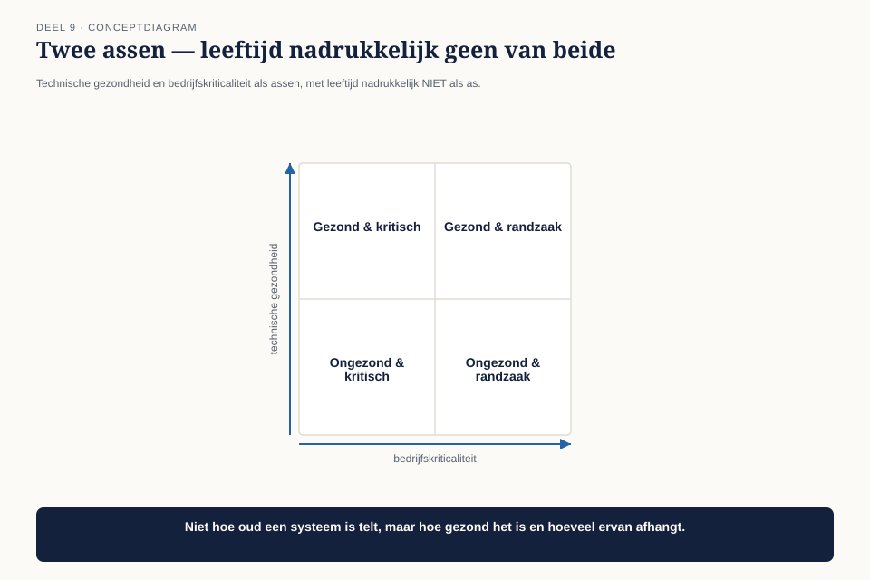

Deel 9 — IT Environment
Niveau 1 — De kern | Deelnemersreader BTABoK-cursus, Ductus
9.1 Waar dit deel over gaat
De laatste pijler van niveau 1, en de enige die geen eigen observatie sluit. IT Environment bevat tien competenties — het grootste aantal van alle vijf pijlers — en gaat over de omgeving waarin architectuurwerk plaatsvindt: assets, wijzigingen, governance, kennis, beslissingsondersteuning, platformen.
De reden dat dit deel geen observatie sluit, is niet dat het onbelangrijk is. Het is het fundament waarop de andere zes rusten. Elke observatie die je tot nu toe hebt gesloten — de eenheid van waarde, de stakeholderkaart, het besluitenlogboek, het kwaliteitsprofiel — moet ergens wonen in een organisatie die groter is dan één architect. Dat is waar dit deel over gaat.
Aan het eind van dit deel kun je:
- uitleggen waarom legacy de normale toestand van een IT-landschap is, niet een probleem dat je oplost;
- een lichte legacytriage toepassen om te bepalen wat prioriteit verdient;
- het verschil toepassen tussen governance die kaders stelt en governance die ontwerpt;
- de link leggen tussen kennismanagement en het besluitenlogboek uit deel 7.
9.2 De nieuwe kans
Het bestuur van Meridiaan overweegt een bod uit te brengen op de uitvoering voor een middelgroot pensioenfonds dat zijn huidige uitvoerder wil verlaten — een direct gevolg van de consolidatietrend die in deel 2 als sectorkracht is geïdentificeerd. Voordat het bod wordt uitgebracht, wil de directie weten: kan Meridiaan dit fonds erbij hebben zonder het bestaande landschap te breken?
Claudette krijgt de opdracht een beknopte technische due diligence te doen: welke systemen kunnen een extra fonds absorberen, en welke vormen een risico?
Ze begint bij de instinctieve aanpak: een lijst van alle systemen, gesorteerd op leeftijd. De oudste systemen bovenaan als grootste risico.

De directeur Uitvoering, inmiddels bekend uit deel 4 en 8, bekijkt de lijst en stelt een vraag die de aanpak op zijn kop zet: “Het oudste systeem op je lijst is onze polisadministratie. Die raken we voorlopig niet aan, en niemand hier maakt zich er zorgen over. Waarom staat die dan bovenaan?”
9.3 Legacy is de normale toestand
De BoK behandelt legacy modernization niet als uitzondering maar als permanent onderdeel van elke IT-omgeving. Dat is een andere houding dan de meeste organisaties impliciet aannemen, waarin legacy wordt gezien als een tijdelijke, ongewenste toestand die “opgelost” moet worden.
De correctie: leeftijd is geen risicomaat. Een systeem van tweeëntwintig jaar oud dat stabiel draait, weinig wijzigt en goed wordt begrepen door de mensen die het onderhouden, is geen risico — het is een bewezen stuk infrastructuur. Een systeem van twee jaar oud dat niemand meer begrijpt omdat de bouwers zijn vertrokken en er geen documentatie is, is een veel groter risico ondanks zijn jonge leeftijd.

De juiste vraag is niet “hoe oud is dit”, maar twee andere vragen tegelijk:
Technische gezondheid. Kan het systeem nog veilig worden gewijzigd? Is er kennis van hoe het werkt? Zijn de onderliggende technologieën nog ondersteund?
Bedrijfskriticaliteit. Wat gebeurt er als dit systeem uitvalt of niet kan worden aangepast? Hoeveel van de business hangt ervan af?
9.4 De legacytriage
Om dit systematisch te maken, gebruiken we een eenvoudig kwadrant dat de twee assen uit 9.3 combineert.

| Kriticaliteit laag | Kriticaliteit hoog | |
|---|---|---|
| Gezondheid goed | met rust laten | bewaken, niet aanraken tenzij nodig |
| Gezondheid slecht | uitfaseren wanneer gelegenheid zich voordoet | prioritair aanpakken |
Toegepast op Claudette’s lijst: de tweeëntwintig jaar oude polisadministratie zit in “gezondheid goed, kriticaliteit hoog” — precies het kwadrant dat je met rust laat en bewaakt, niet aanpakt. Het systeem dat wél prioriteit verdient, blijkt een vijf jaar oud koppelvlak te zijn — jonger dan de polisadministratie, maar gebouwd door een externe partij die niet meer bestaat, met documentatie die alleen in het hoofd van één inmiddels vertrokken medewerker zat. Jong in leeftijd, slecht in gezondheid, hoog in kriticaliteit omdat het precies het type koppelvlak is dat een nieuw fonds zou moeten gebruiken.
Verband met deel 7. Merk op dat “gezondheid” voor een groot deel bepaald wordt door of er een spoor is — een besluitenlogboek, documentatie, mensen die het nog begrijpen. Een systeem zonder spoor is per definitie technisch ongezond, ongeacht hoe goed de code zelf is, want niemand kan meer met vertrouwen wijzigen wat niemand meer begrijpt.
9.5 Governance: kaders versus ontwerp
De tweede competentie in dit deel raakt een spanning die al in deel 1 werd aangekondigd: de BoK-tenet “bouw dingen, bestuur geen dingen” tegenover de praktijk van een architectuurgremium in een gereguleerde sector.
Dit deel lost die spanning niet definitief op — dat gebeurt uitgebreider in niveau 2 — maar geeft een werkbaar onderscheid voor de dagelijkse praktijk: governance die kaders stelt, is iets anders dan governance die ontwerpt.
| Kaders stellen | Ontwerpen | |
|---|---|---|
| Wat het doet | grenzen en principes vaststellen waarbinnen gewerkt wordt | de specifieke oplossing zelf kiezen |
| Voorbeeld | “elk koppelvlak met een extern fonds gebruikt hetzelfde patroon” | “dit specifieke koppelvlak wordt zo gebouwd” |
| Wie hoort hier | het architectuurgremium, vooraf | het projectteam, tijdens de bouw |
| Risico bij verwarring | gremium ontwerpt mee → vertraging, verantwoordelijkheid wordt onduidelijk | niemand stelt kaders → elk team vindt het wiel opnieuw uit |
Bij de due diligence voor het nieuwe fonds is dit onderscheid direct praktisch: het architectuurgremium stelt het kader vast (“elk nieuw fonds sluit aan via het generieke koppelvlakpatroon uit deel 2”), maar het is niet aan het gremium om te bepalen hoe dat specifieke koppelvlak voor dit specifieke fonds eruitziet. Wie dat verwart — en dat gebeurt vaak, ook bij ervaren gremia — verandert een kaderstellend orgaan in een ontwerpbureau met een goedkeuringsstempel, en dat is precies waar de BoK-tenet tegen waarschuwt.
9.6 Kennismanagement: het besluitenlogboog als levend archief
De derde competentie sluit rechtstreeks aan op deel 7. Een besluitenlogboek dat wordt ingevuld maar nooit wordt geraadpleegd, is geen kennismanagement — het is archivering. Het verschil zit in de vraag of iemand het spoor kán terugvinden op het moment dat hij het nodig heeft.
Voor de due diligence betekent dit concreet: Claudette doorzoekt het besluitenlogboek (voor zover het al gevuld is sinds deel 7) op besluiten die relevant zijn voor het nieuwe fonds — met name het besluit over het koppelvlakpatroon uit deel 2. Ze vindt het, inclusief het vijfde veld: wanneer moet dit heroverwogen worden? Het antwoord dat destijds is vastgelegd — “zodra we een derde fonds aansluiten via hetzelfde patroon” — is nu precies van toepassing.
Dit is de eerste keer in de cursus dat een besluitenlogboek zijn waarde bewijst op het moment zelf, niet als theoretische oefening. Dat is precies het punt van deel 7: niet vastleggen voor de vorm, maar vastleggen omdat een toekomstige situatie er iets aan heeft.
9.7 Beslissingsondersteuning en platformen
De laatste twee competenties in dit deel behandelen we kort, omdat ze grotendeels voortbouwen op wat al is behandeld.
Beslissingsondersteuning is de vaardigheid om de juiste informatie op het juiste moment bij de juiste beslisser te krijgen — een directe toepassing van de stakeholderkaart uit deel 4 en de omgekeerde piramide uit deel 5, nu toegepast op het niveau van de hele IT-omgeving in plaats van één voorstel.
Platformen gaat over het onderscheid tussen wat een organisatie zelf bouwt en wat ze afneemt of hergebruikt — een uitbreiding van de decompositielogica uit deel 6 (langs veranderreden) naar de vraag welke delen van het landschap gedeelde infrastructuur zijn en welke uniek per systeem.
9.8 De due diligence afgerond
Claudette’s rapport aan de directie bevat geen lijst op leeftijd. Het bevat de legacytriage met vier kwadranten, waarbij precies twee systemen in het kwadrant “prioritair aanpakken” vallen — beide om redenen die niets met leeftijd te maken hebben. Het bevat een verwijzing naar het bestaande kaderbesluit over koppelvlakpatronen, met het vastgelegde heroverwegingsmoment dat nu is bereikt. En het bevat een aanbeveling: het architectuurgremium stelt het kader vast voor deze aansluiting, het projectteam ontwerpt de specifieke uitvoering.
De directie brengt het bod uit. Niet omdat alles perfect is — twee systemen vragen aandacht — maar omdat er nu een precies beeld ligt van wát aandacht vraagt en waarom, in plaats van een vage zorg over “oude systemen.”
9.9 Wat dit deel heeft opgeleverd
Er sluit geen observatie in dit deel, maar drie dingen zijn wel degelijk veranderd:
Legacy is een diagnose geworden, geen gevoel. Twee assen, geen leeftijdslijst.
Governance heeft een werkbaar onderscheid gekregen tussen kaders stellen en ontwerpen, dat de spanning uit deel 1 niet oplost maar wel hanteerbaar maakt.
Het besluitenlogboek uit deel 7 heeft zijn eerste echte toepassing bewezen — niet als oefening, maar als instrument dat een reëel besluit sneller en beter onderbouwd maakt.
In deel 10 komen alle zeven observaties samen. Claudette verdedigt haar aanpak — de eenheid van waarde, de stakeholderkaart, het waarderingsblad, het besluitenlogboek, het kwaliteitsprofiel, de legacytriage — voor drie MT-rollen tegelijk, precies zoals ze in deel 1 voor het eerst met Bart Hoekstra sprak.
9.10 Kernbegrippen
| Begrip | Betekenis in deze cursus |
|---|---|
| Legacytriage | Ductus-werkvorm: technische gezondheid × bedrijfskriticaliteit, leeftijd is expliciet geen as |
| Technische gezondheid | kan het systeem nog veilig worden gewijzigd; is er kennis en documentatie van hoe het werkt |
| Kaders stellen versus ontwerpen | governance die grenzen vaststelt, tegenover governance die de specifieke oplossing kiest |
| Kennismanagement als levend archief | een besluitenlogboek bewijst zijn waarde pas als het daadwerkelijk wordt geraadpleegd op het moment dat het nodig is |
Volgende deel: deel 10 — examentraining CITA-F en capstone. Alle zeven observaties komen samen. Claudette verdedigt haar minimum viable architecture-dossier voor drie MT-rollen.